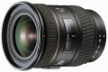
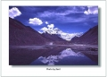

器材库 > 35mm画幅AF变焦镜头 > AF 17-35/3.5 G

详细规格
镜头类型
超广角变焦镜头
发布日期
1997-06
最大光圈
f/3.5
最小光圈
f/22
视角（对角）
104° - 63°
镜头结构
15片/12组
光圈叶片
7片
最大放大倍率
0.170
驱动马达
AF马达
滤镜口径
77mm
镜头卡口
Minolta/Konica-Minolta/Sony AF
防抖
否
颜色
黑色
尺寸
82×90mm
重量
600g
色影不讳2011-04-16 13:383.25 分
操作性 0.50耐用性 5.00性价比 0.50解像力 3.50色彩还原 5.00机械结构 5.00
一亿像素2010-08-30 09:444.42 分
操作性 5.00耐用性 4.50性价比 3.50解像力 4.00色彩还原 5.00机械结构 4.50
珍爱一生2009-12-31 14:414.5 分
操作性 5.00耐用性 4.50性价比 3.00解像力 5.00色彩还原 5.00机械结构 4.50
cnbc2005-07-16 19:454.33 分
操作性 5.00耐用性 4.50性价比 2.50解像力 4.50色彩还原 5.00机械结构 4.50
子非鱼2005-02-03 02:024.75 分
操作性 5.00耐用性 5.00性价比 4.00解像力 4.50色彩还原 5.00机械结构 5.00

徐戟2004-09-25 20:152.92 分
操作性 4.50耐用性 1.50性价比 2.00解像力 4.50色彩还原 4.00机械结构 1.00
爸爸的草鞋2003-03-31 19:544.75 分
操作性 5.00耐用性 5.00性价比 4.00解像力 4.50色彩还原 5.00机械结构 5.00
cguy2002-04-12 13:184.75 分
操作性 5.00耐用性 5.00性价比 4.00解像力 5.00色彩还原 5.00机械结构 4.50
产品图 / 样片
外观图